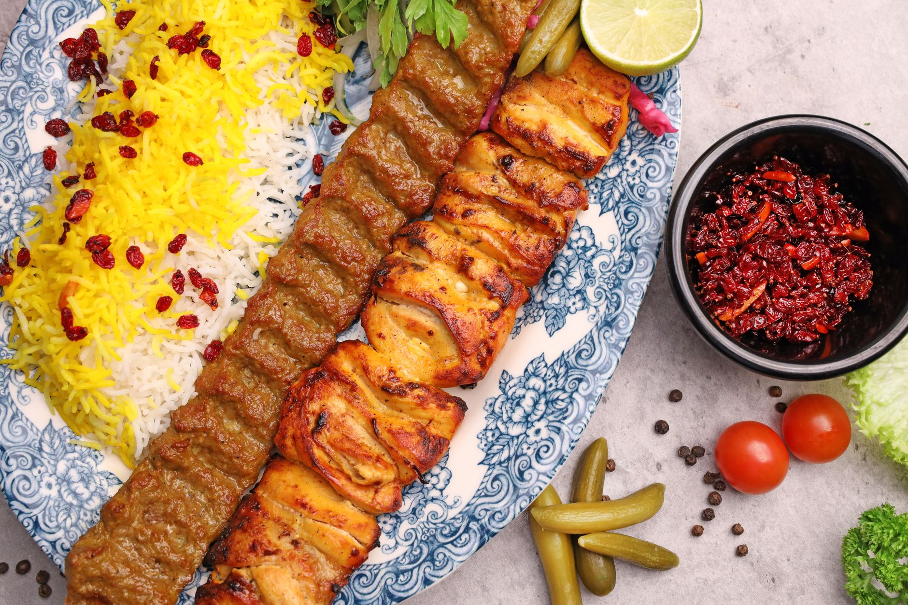
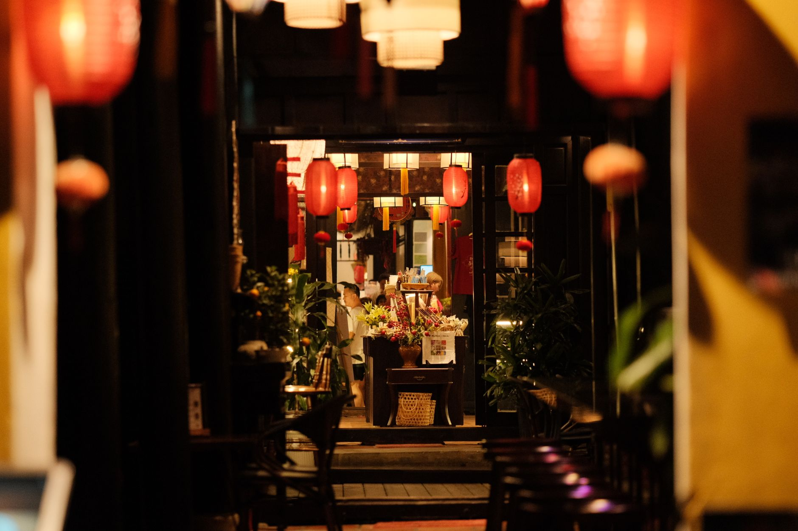

Golestan Persian Kitchen
Three generations of Persian cooking on Lonsdale Avenue. Basmati steamed with saffron and butter, lamb and chicken over charcoal, and a pot of herb stew that starts at seven in the morning.

The family
Golestan opened in November 2009 in a narrow room two doors up from where we are now. Maman-joon — Parvaneh Ghaffari — ran the kitchen then, and she still comes in on Fridays to check the rice and tell us the herbs are cut too coarse. Her daughter Roya cooks the stews and the kebab marinade. Her son Kaveh is the one at the door, and he will remember that you sat by the window last time and that you do not eat dairy.
Three things have not changed since 2009. We soak the basmati for two hours and steam it in a covered pot so the bottom turns into tahdig. We grind our own lamb shoulder every morning for the koobideh rather than buying it ground. And we bring you tea and a bowl of fresh herbs before you have ordered anything, because that is how you are fed in someone's house.
The dining room seats fifty-two. It is quiet enough to talk in, and the lanterns are low. We do not rush a table.

Weekend brunch
Saturday and Sunday, 9am to 2pm. No reservations for brunch — put your name down at the door and we will text you when the table is ready. The wait on a sunny Sunday runs about thirty minutes, and most people spend it at the bakery across the street.
What lands on the table: warm barbari bread from the oven at the back, a slab of Bulgarian feta, walnuts, a plate of tarragon, mint and basil, sour cherry jam, honey with the comb still in it, and clotted cream. Then whatever you have ordered on top of that — adasi, the warm lentil porridge with fried onion; haleem with cinnamon and sugar; or an omelette of tomato and turmeric cooked down until it is almost jam. Tea is poured from the samovar and keeps coming.
People line up for it because it is three hours of eating for the price of a large breakfast, and because it is the one meal of the week where nobody asks you to finish and move along.

Three dishes we are known for
-
Ghormeh sabzi
Parsley, coriander, chives and fenugreek fried slowly until they go dark, then lamb shank, red kidney beans and two dried Omani limes. Six hours on low heat. It should be sour first and herbal second.
-
Kabab-e koobideh
Lamb shoulder and beef ground together in the morning with grated onion and nothing else but salt and pepper. Pressed onto flat skewers by hand and cooked over charcoal in about four minutes. Served with grilled tomato and sumac.
-
Fesenjan
Toasted walnuts ground to a paste and cooked down with pomegranate molasses until the sauce turns nearly black. We make it with chicken thigh, and we keep it on the sour side of sweet, the way it is made in the north.
Catering
We cater office lunches, weddings, memorials and Nowruz parties across the North Shore and into downtown Vancouver, for twenty people up to two hundred. The rice goes into insulated pans that hold heat for about three hours, the kebab is grilled as late as we can manage before the drive, and the herbs and salads travel separately so nothing wilts. We can set up chafing dishes and staff the line, or drop the food and leave you to it. Give us seventy-two hours for anything over fifty guests.
Hours and finding us
- Lunch and dinner
- Tuesday to Sunday, 11:30am to 10pm. Closed Mondays.
- Weekend brunch
- Saturday and Sunday, 9am to 2pm. Walk-in only.
- Address
- Lonsdale Avenue, North Vancouver, BC
- Parking
- Metered street parking on Lonsdale, free after 6pm. The lot behind the building off West 13th is free for two hours and is usually where we tell people to go.
- Phone
- (604) 555-0147
- hello@example.com
Come sit down
Dinner tables can be booked up to a month ahead. For brunch, just come by and give Kaveh your name.